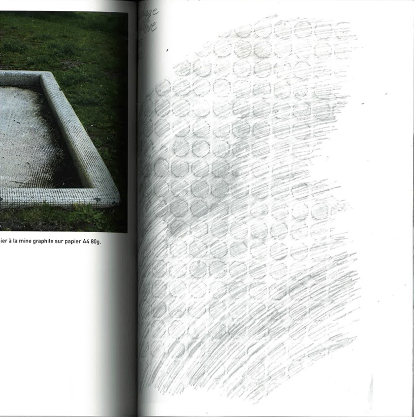
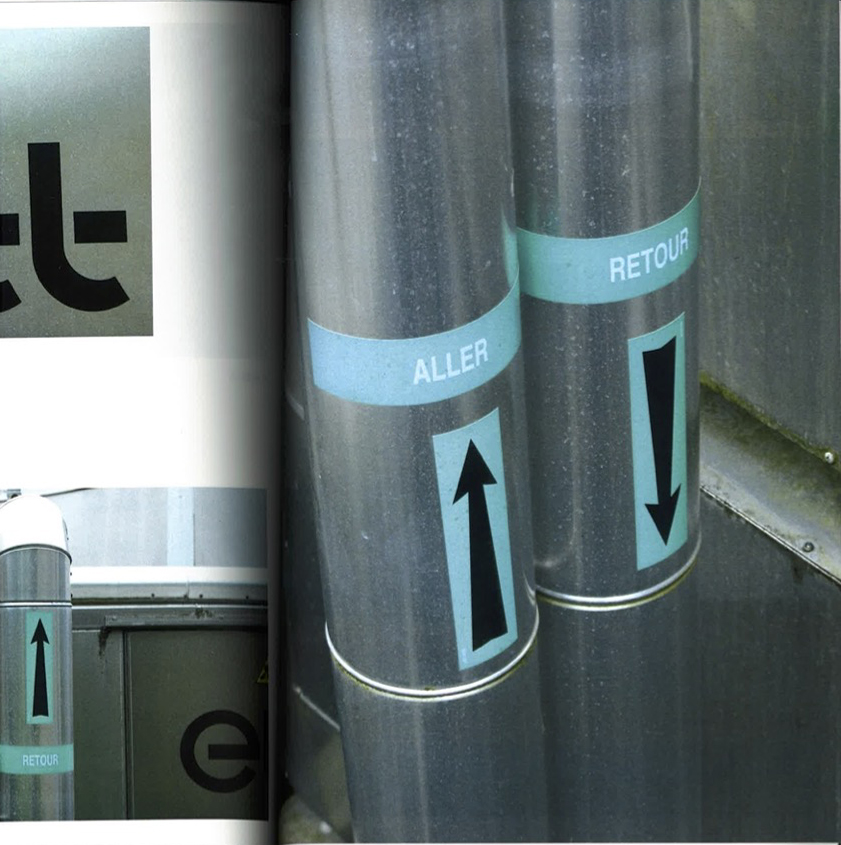
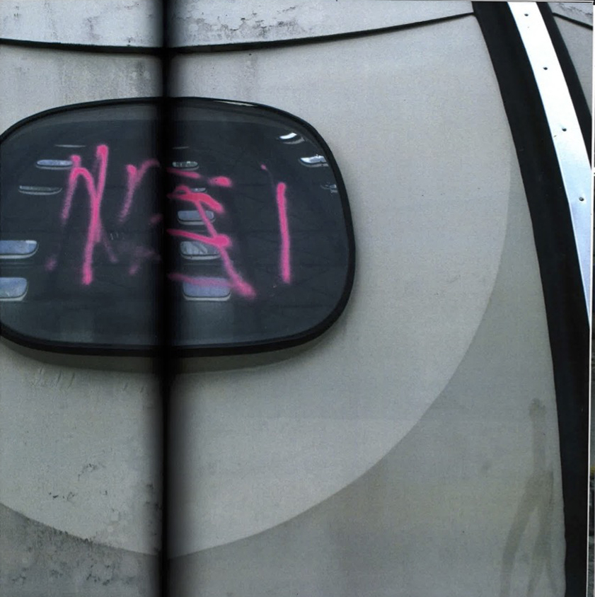

Piscine Tournesol (2023)
Analyse de lieu, de la piscine tournesol de Granville (50).
Dessinée par Bernard Schoeller, cette architecture insolite
a été l'objet d'une analyse photographique,mais également
de frottages sur certaines parties de cette dernière.
L'ensemble des éléments prélevés,
est cartographié, pour comprendre l'emplacement des prélèvements.
Impression laser, 111 pages, 240x3O0mm, reliure archive en plastique.



